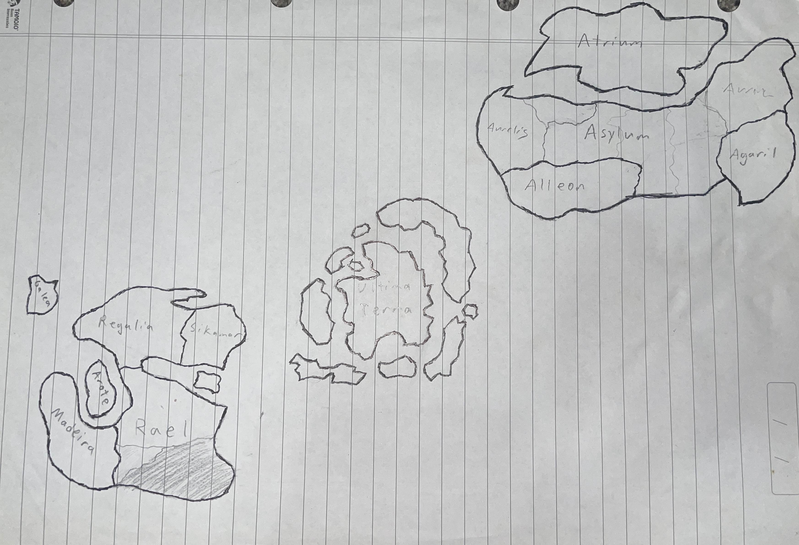

The World of Kairos is large and has multiple different continents. Each have different qualities and laws they must abide by. The continents of Averento, Rak’Tar, Escalia (not pictured), Arcadia (not pictured), and Ultima Terra all have different rules and laws governing them.
Avarento
Averento is a continent ruled by science, technology, and study, with the God of Science as the highest order./p>
Rak'Tar
Rak Tar is a continent ruled by magic, with the God of Magic as the highest order.
Escalia
Escalia is a continent ruled by balance, with the God of Balance as the highest order.
Arcadia
Arcadia is the continent of primordials, ruled over by the primordials, the first living creations of the gods. They can best be described as demigods, with the same immortality as the gods, but far less individual power.
Ultima Terra
Ultima Terra is a wasteland, ruled by none and wanted by none. It is filled with immense pockets of concentrated magic, which can be hazardous to the health of those who enter there.